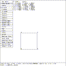
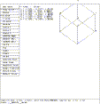

 Figure (eo-xyzmove): ``arb8'' Object Edit; Translated to (0.5, -2, 1.5)
mged> scale 1
mged> translate .5 -2 1.5
mged>
Select the X move menu entry.
The first two commands undo the effects of the previous scale operation, and translate the key point to (0.5, -2, 1.5). The coordinates of the other points are changed accordingly; preserving their distances relative to point 1 (see Figure (eo-xyzmove) ). The last operation above placed MGED into a state where the key point of the object will track the X component of successive selects, but not the Y component. Note that on some displays point 1 may not be directly visible. It is actually behind point 4. Watch the area listing the information concerning ``arb8'' as selections are made.
Do several selects while moving the cursor slowly in a circle.
Observe that only the X axis information changes. Similarly, the Y move tracks only changes in the Y axis, and XY move tracks
changes in both axes.
 Figure (eo-xymove): XY Move
mged> press 45,45
mged>
Do several more selects while moving the cursor slowly in a circle.
This time, moving point 1 modifies the model x and y axes (observe the
changes in the list of vertices). If Y move is selected, all
three sets of axes are modified. These operators work in screen space,
not model space, so using them with an oblique view moves the model in
more than one axis (
Figure (eo-xymove)
for example)..
{kind=link}
{kind=link}